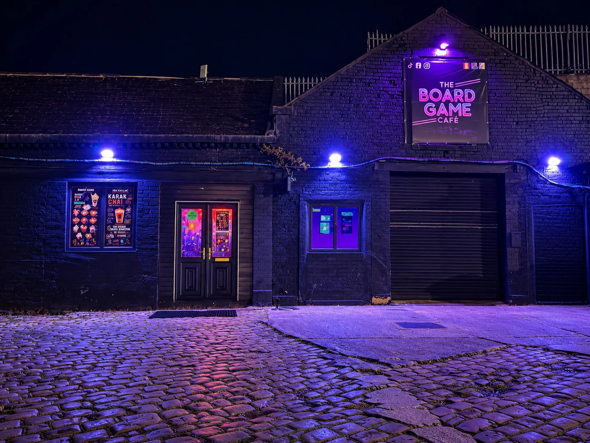

Contact & enquiriesTell us what
Tell us what
you’re planning.
For tables, birthdays, groups, private hire, corporate events or anything else — send us the details and we’ll point you to the right option.
Send an enquiry
Choose what you’re planning, share the essentials and we’ll confirm the next steps. Your enquiry is a request, not a confirmed booking.
Find the caféLook for the sign
Look for the sign
at The Stables.
Unit 12, The Stables, Eanam, Blackburn BB1 5BY. Look for our entrance sign in the photograph. Free parking, including accessible parking, is available on site.
The entrance is step-free at street level. Please contact us before travelling if you need help planning an accessible visit; there is no accessible toilet.
Get directions on Google Maps